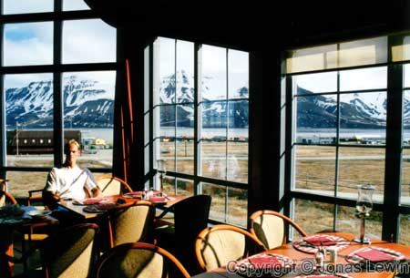
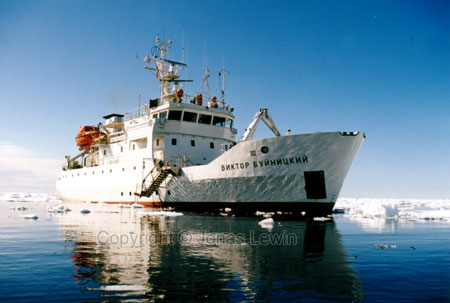
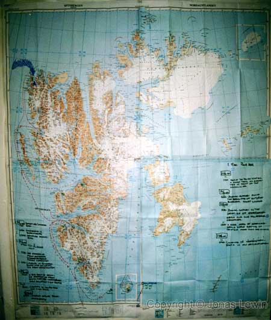
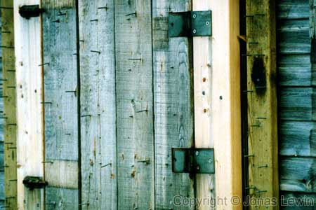

You know, the cold place 1000km from the north pole.
On
Svalbard, Longyearbyen is the 'capital'. It's also village (with permanent residents) that is the furthest
north in the world. It's not dark for 3 months of the year (24h daylight),
and for 3 months there's no sign of the sun anywhere. They have 3 km of road
in LongYearByen, so bringing my motorcycle there
would be just as sense full as arguing with a cloud.Well, I went to Svalbard to see the polar bear, and a closer look of the
arctic landscape. I got to see them both. The landscape is really amazing.
The air is cold, fresh and clean. Among the cleanest places on earth. The
difference to the air in Bangkok is just as different as the temperature in
those places. On a good day it's a few degrees over freezing point.
For some reason there is not much wind in the air, and when I was there the
sun was showing it's face almost all of the time. This combination made
summer in the arctic durable. Cold, but durable. 7 layers of clothes on my
torso, and 3 layers on my legs. On times where the wind where somewhere
else, the sun tried to persuade you to take of your cap. After a while, I
couldn't resist, and removed my cap. But after a few minutes, I realized
that it was was too cold for me.
On this ship (Viktor Buynitskiy), I got seasick for the first time in my
life. And it was on a day like you see on the brochures. No wind, no waves,
just a calm day. Strange, since I did not get seasick on the boats in
Thailand and Australia. If you are planning to go here, bring something to
cure your cold, since you probably will get one. Sun block is also a
necessary thing to bring. And you need sun block factor in the area of
30-75. Clear skies, snow and water reflecting the rays, and you are outdoor
all the time will call for this.
I took some 400 pictures during my week there, and here I proudly present
the best of them.
Here's a picture of the route our group took.
The down side of this trip was that I was not able to see all the nature I
wanted. The guides always wanted us to go to settlements, and other historic
places. I didn't go to Svalbard to see history. I can watch that on TV.
We where lucky enough to see the polar bear hunting, use the tactics of
being quiet (as the surrounding is really quiet here) and sneaking towards
its pray down wind. It did not work this time, so he had to walk away
hungry. And I can agree with the people saying that the polar bear is
constantly walking. It may stop for about 15 seconds, but that's it.
Another great reason to go north, far north, is to see the the arctic
landscape and the midnight sun. Ice, Ice, and more ice on the ocean,
wherever you look. The water was always calm when we where close to the ice.
This gives me a very relaxing feeling. And as the sun was always up, it was
hard to know by heart what time it was.
If you are lucky, you will also see some great ice-sculptures that mother
nature made just for you to look at. Of course, on this page you can only
see some photos, so to really see the magnificent and you need to go there
your self. Can you tell me how big these pieces of ice are, just by looking
a the photos?
One of my best memory from this trip, is the blue ice. This ice is old.
Really old. I read somewhere that this ice can be more than 50.000 years
old. If this ice is that old, I have no way of knowing. But this piece of
ice has been ice long before some guy in Israel tried to walk on water. And
there it was, just melting away, right before my eyes.
As
you can see on the map above, we took a tour down to the southern most
island of Svalbard. It's known for two things. It's birdlife and the
constant fog. It's clearly illustrated on this picture. The density of birds
on some places on this island can be really high. I've never seen so many
birds in one place before. The guide told us that this is the largest bird
cliff on the northern hemisphere. However, I did not realize the density of
birds, until I saw it with my own eyes. The birds where sitting so tight on
the cliffs, that they barely could move. I could compare it to "bird
cities".
The rain deer we have in northern Sweden does not look like the one on
Svalbard. Yes it has horns, and four legs, but I don't think that this is
what you imagine Santa to use to bring you your Christmas presents. All you ever
see them do during summer, is eating. Just like the polar bear is walking,
the rain deer is eating.
We where extremely lucky to see very many seals close together. I saw hundreds of seals,
just relaxing. As they where far from shore, and the ice was just big enough
to carry them they didn't seem to worry about polar bears.
We got really close. I was less than 4 meters away, and some others in our
small raft where less than 2 meters away. We where _very_ quiet, and didn't
move too fast. The very experienced crew on Viktor Buynitskiy got us this
close, and they should get all the credit they can. Our guides does not
deserve any credit for this trip, as they where more or less useless.
This
image illustrates very clearly how the natives protect a cabin from polar
bears. Very long nails, close to the window. |